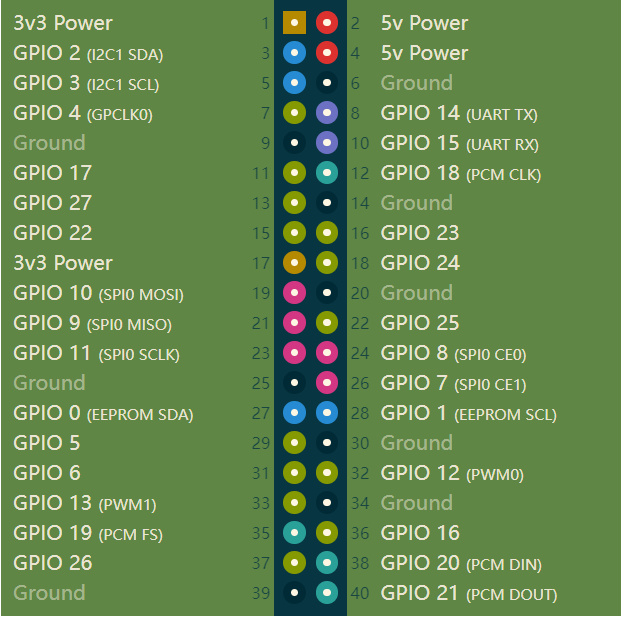

出厂固件介绍
仅介绍myCobot系列、myPalletizer系列以及mechArm系列分为微控制器和微处理器两类。
- 微控制类设备：
- myCobot 280 M5
- myCobot 320 M5
- myPalletizer 260 M5
- mechArm 27 M5
- 微处理类设备
- myCobot 280 Pi
- myCobot 320 Pi
- mechArm 270 Pi
微处理器和微控制器的区别，主要集中在硬件结构、应用领域和指令集特征三个方面：
硬件结构。微处理器是一个单芯片 CPU ，而微控制器则在一块集成电路芯片中集成了 CPU 和其他电路，构成了一个完整的微型计算机系统。除了 CPU ，微控制器还包括 RAM 、 ROM 、一个串行接口、一个并行接口，计时器和中断调度电路。
应用领域。微处理器通常作为微型计算机系统中的 CPU 使用，其设计正是针对这样的应用，这也是微处理器的优势所在。然而，微控制器通常用于面向控制的应用，系统设计追求小型化，尽可能减少元器件数量。微控制器适用于那些以极少的元件实现对输入/输出设备进行控制的场合，而微处理器适用于计算机系统中进行信息处理。
指令集特征。由于应用场合不同，微控制器和微处理器的指令集也有所不同。微处理器的指令集增强了处理功能，使其拥有强大的寻址模式和适于操作大规模数据的指令。微处理器的指令可以对半字节、字节、字，甚至双字进行操作。通过使用地址指针和地址偏移，微处理器提供了可以访问大批数据的寻址模式。自增和自减模式使得以字节、字或双字为单位访问数据变得非常容易。
2. 微处理类设备出厂固件：python demo
目前微处理类设备已开放的python demo有： -拖动示教例程 drag_trial_teaching
拖动示教。
操作员可以直接拖着机器人各关节，运动到理想的姿态，通过键盘按键操作将动作保存在机器中。协作机器人是较早具有该功能的系统。这种示教方式可以避免传统示教的各种缺点，是机器人中一项很有应用前景的技术。
-
此python demo为微处理类设备的测试工具，包含功能校准机械臂和连接检测。
校准机械臂是对机械臂精准控制的前提，设置关节零位，初始化电机的电位值是后续进行进阶开发的基础。
连接检测是一项用机械臂中电机以及Atom连接状态的检测功能。这项功能便于客户排除设备故障。连接检测中看到机械臂的设备连接状态，包括舵机的连接以及Atom 的通讯状态。微控制器类设备中M5Stack-basic上会显示设备的当前固件版本。
电脑控制 目前可以使用VNC和SSH对280pi机械臂进行远程控制。
通用硬件接口说明
40PIN GPIO
简介
GPIO全称：通用型输入输出端口（General-purpose input/output）
目前我司所有的树莓派主板上都有一个40针的GPIO头
电压说明
- 电路板上有两个5V引脚和两个3.3V引脚，以及多个接地引脚(0V)，这些引脚是不可配置的。其余引脚都是通用3.3V引脚，这意味着输出设置为3.3V，输入允许3.3V
IO输出
- 指定为输出引脚的GPIO引脚可以设置为高电平(3.3V)或低电平(0V)
IO输入
- 指定为输入引脚的GPIO引脚可以读取为高(3.3V)或低(0V)。这是更容易使用内部上拉或下拉电阻。引脚GPIO2和GPIO3有固定的上拉电阻，但对于其他引脚，这可以在软件中配置
PWM(脉冲宽度调制)
所有引脚均可使用软件控制PWM
GPIO12, GPIO13, GPIO18, GPIO19可使用硬件控制PWM
SPI
SPI全称为串行外设接口（Serial Peripheral Interface），其是一种高速的，全双工，同步通信总线
SPI0: MOSI (GPIO10); MISO (GPIO9); SCLK (GPIO11); CE0 (GPIO8), CE1 (GPIO7)
SPI1: MOSI (GPIO20); MISO (GPIO19); SCLK (GPIO21); CE0 (GPIO18); CE1 (GPIO17); CE2 (GPIO16)
IIC
I2C，中文全称为集成电路总线，是一种串行通信总线，使用多主从架构
数据(GPI02)，时钟(GPI03)
EEPROM数据：(GPIO0)，EEPROM时钟(GPI01)
Serial
串口是串行接口（serial port）的简称，也称为串行通信接口或COM接口
TX (GPIO14)，RX (GPIO15)
python 控制引脚输出
import RPi.GPIO as GPIO import time # 初始化 GPIO.setmode(GPIO.BCM) GPIO.setup(20, GPIO.OUT) GPIO.setup(21, GPIO.OUT) # 高电平 GPIO.output(20, 0) GPIO.output(21, 0) # 等待2秒 time.sleep(2) # 低电平 GPIO.output(20, 1) GPIO.output(21, 1)**GPIO的各个接口定义如下表所示：
| 标签 | 信号名 | 类型 | 功能 | 备注 |
|---|---|---|---|---|
| 5V | 5V | P | DC 5V | |
| 5V | 5V | P | DC 5V | |
| GND | GND | p | GND | |
| NC | NC | - | - | 暂不支持 |
| NC | NC | - | - | 暂不支持 |
| 18 | GPIO18 | I/O | GPIO18 | |
| GND | GND | p | GND | |
| 23 | GPIO23 | I/O | GPIO23 | |
| 24 | GPIO24 | I/O | GPIO24 | |
| GND | GND | p | GND | |
| 25 | GPIO25 | I/O | GPIO25 | |
| 08 | GPIO8 | I/O | GPIO8 | |
| 07 | GPIO7 | I/O | GPIO7 | |
| 01 | GPIO1 | I/O | GPIO1 | |
| GND | GND | p | GND | |
| 12 | GPIO12 | I/O | GPIO12 | |
| GND | GND | p | GND | |
| 16 | GPIO16 | I/O | GPIO16 | |
| 20 | GPIO20 | I/O | GPIO20 | |
| 21 | GPIO21 | I/O | GPIO21 | |
| 3.3 | 3.3V | P | DC 3.3V | |
| NC | NC | - | - | 暂不支持 |
| 03 | GPIO3 | I/O | GPIO3 | |
| 04 | GPIO4 | I/O | GPIO4 | |
| GND | GND | p | GND | |
| 17 | GPIO17 | I/O | GPIO17 | |
| 27 | GPIO27 | I/O | GPIO27 | |
| 22 | GPIO22 | I/O | GPIO22 | |
| 3.3 | 3.3V | P | DC 3.3V | |
| 10 | GPIO10 | I/O | GPIO10 | |
| 09 | GPIO9 | I/O | GPIO9 | |
| 11 | GPIO11 | I/O | GPIO11 | |
| GND | GND | p | GND | |
| 00 | GPIO0 | I/O | GPIO0 | |
| 05 | GPIO5 | I/O | GPIO5 | |
| 06 | GPIO6 | I/O | GPIO6 | |
| 13 | GPIO13 | I/O | GPIO13 | |
| 19 | GPIO19 | I/O | GPIO19 | |
| 26 | GPIO26 | I/O | GPIO26 | |
| GND | GND | p | GND |
注意:
I: 仅作为输入。
I/O: 该功能信号包含输入和输出组合。
当管角设置为输出端时，它将输出电压3.3V。
单个管角的拉电流随管脚数量增加而减小，从约40mA减小到29mA。
如果某个GPIO被设置为输出模式时，输出高电平信号，电路连接如图 2.1.5.2-3 所示，LED灯将点亮。

- 关于功能接口的其他功能表如图 2.1.5.2-4 所示,使用其他功能的情况下，IO功能不可用。

3.2 机械臂底座接口介绍
A. 底座的正面如图所示：

底座正面
- ① 开关按键
- ② 功能接口组一
- ③ USB2.0 , USB3.0
- ④ 电源DC接口
- ⑤ 网口
B. 底座的侧面如图所示:

底座侧面
- ① SD卡卡槽
- ② Type C
- ③ HDMI
- ④ 音频接口
1.2 机械臂底座接口详细说明
A. 电源DC接口: 使用DC电源插座，外径6.5mm，内径2.0mm；可使用厂家配备的12V 5A DC电源适配器给 myCobot280 进行供电。
B. 开关按键：红色为开关，I为开机，O为关机。
C. USB2.0接口：以串口总线标准2.0进行数据连接的接口；用户可以使用USB接口拷贝程序文件，也可以使用USB接口连接鼠标、键盘等外设。
D. USB3.0接口（蓝色）：以串口总线标准3.0进行数据连接的接口；用户可以使用USB接口拷贝程序文件，也可以使用USB接口连接鼠标、键盘等外设。

E. 网口：网络数据连接的端口，用户使用Ethernet接口可以用于PC端与机器人系统的通信交互，也可以用于与其他设备进行以太网通信。

F. HDMI 接口: 接口为HDMI D型接口，连接显示器。HDMI接口2存在优先级，推荐使用HDMI接口1。
G. Type C接口：可用于和PC端连接通讯，更新固件使用。
H. SD卡卡槽: SD卡可以插入和拔出。SD卡的大小是32mm×24mmx2.1mm